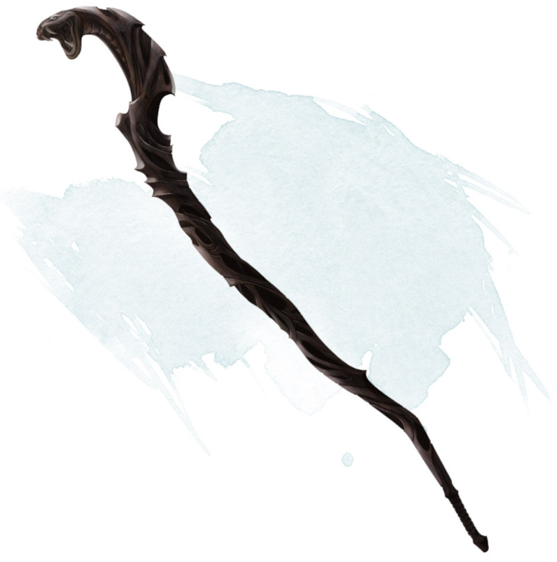

Bâton de la vipère
Bâton, peu commun (nécessite un lien avec un clerc, un druide ou un occultiste)
Vous pouvez utiliser une action bonus pour prononcer le mot de commande de ce bâton et ainsi animer la tête du bâton qui devient alors un serpent venimeux pendant 1 minute. En utilisant une autre action bonus pour prononcer de nouveau le mort de commande, vous faites revenir le bâton à sa forme initiale.
Vous pouvez effectuer une attaque au corps à corps en utilisant la tête de serpent, qui possède une allonge de 1,50 mètre. Votre bonus de maîtrise s'applique au jet d'attaque. Si le jet d'attaque est réussi, la cible subit 1d6 dégâts perforants et doit réussir un jet de sauvegarde de Constitution DD 15 sous peine de subir 3d6 dégâts de poison.
La tête de serpent peut être attaquée tant qu'elle est animée. Elle possède une Classe d'Armure de 15 et 20 points de vie. Si la tête tombe à 0 point de vie, le bâton est détruit. Tant que le bâton n'est pas détruit, il récupère tous les points de vie qu'il a pu perdre lorsqu'il retrouve sa forme inanimée.
Vous pouvez effectuer une attaque au corps à corps en utilisant la tête de serpent, qui possède une allonge de 1,50 mètre. Votre bonus de maîtrise s'applique au jet d'attaque. Si le jet d'attaque est réussi, la cible subit 1d6 dégâts perforants et doit réussir un jet de sauvegarde de Constitution DD 15 sous peine de subir 3d6 dégâts de poison.
La tête de serpent peut être attaquée tant qu'elle est animée. Elle possède une Classe d'Armure de 15 et 20 points de vie. Si la tête tombe à 0 point de vie, le bâton est détruit. Tant que le bâton n'est pas détruit, il récupère tous les points de vie qu'il a pu perdre lorsqu'il retrouve sa forme inanimée.
Dungeon Master´s Guide
